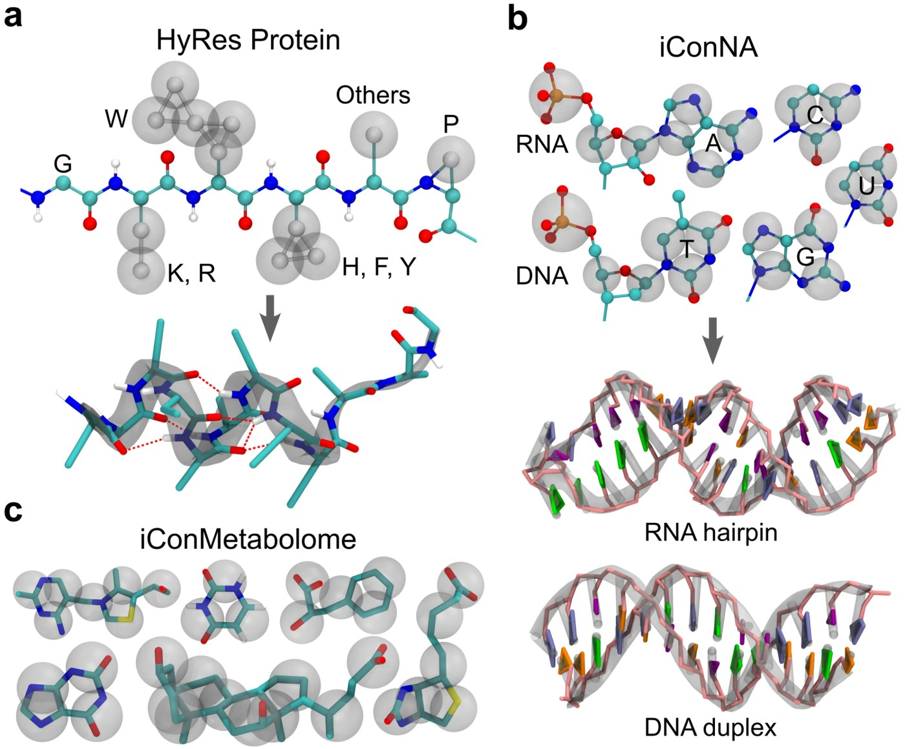
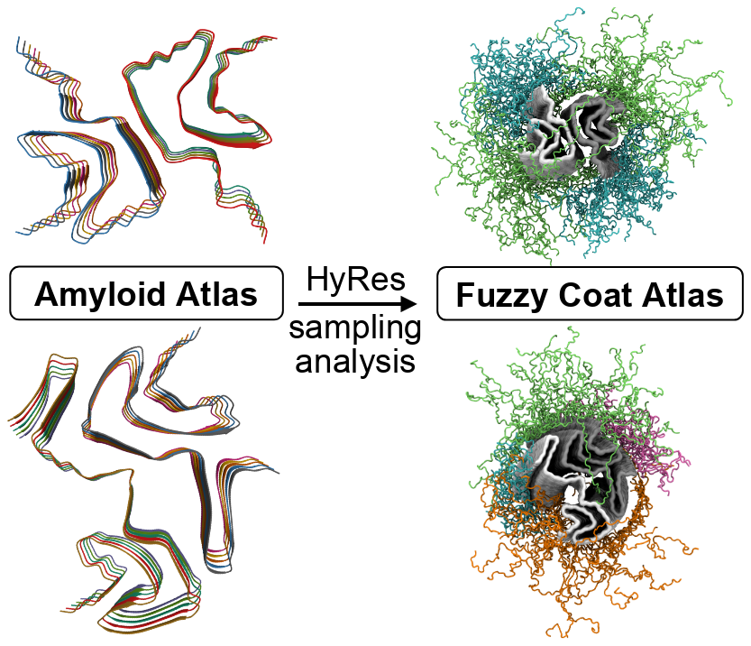
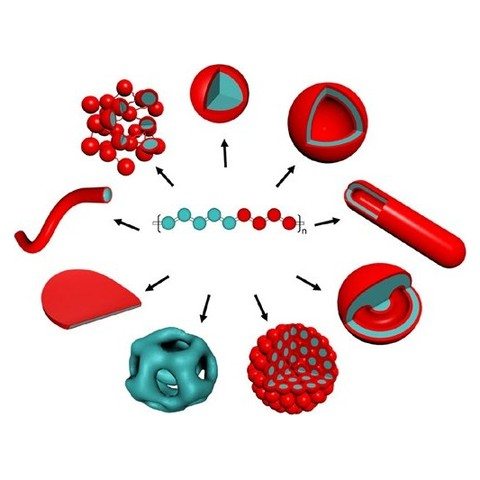

Research
Organization of biomolecules and polymers across scales
How biomolecules and polymers organize, from large molecular complexes to collective behaviors such as self-assembly, phase separation, and aggregation, underlies both cellular function and the design of new materials. My research develops physics-based computational models, integrated with machine learning, that bridge molecular detail and mesoscale behavior, and uses them, together with experiments, to understand and predict how this organization emerges in living and synthetic systems.
Physics-based multiscale models
All-atom simulations are accurate but slow, while simple coarse-grained models miss the molecular features that matter for biology. I develop intermediate-resolution models that close this gap, for proteins (HyRes), nucleic acids (iCon), and small molecules, and integrate them into one framework for simulating complex biomolecular mixtures at near-cellular scale. The models are calibrated against experiments and all-atom simulations, combined with machine learning, and shared as open-source tools.
Key work: JACS 2024 · PNAS 2025 · bioRxiv 2026

Biomolecular condensates
Biomolecular condensates organize the cell through phase separation, and their dysregulation is linked to diseases from neurodegeneration to cancer. I study how the sequence, structure, and interactions of proteins, nucleic acids, and small molecules determine how condensates form, what they contain, how they behave as materials, and how they age into pathological aggregates, with the long-term goal of guiding condensate-targeted therapeutics.
Key work: JACS 2024 · Biochem Soc Trans 2024 · PNAS 2025

Amyloid fibrils and their fuzzy coats
Amyloid fibrils in neurodegenerative diseases have an ordered core surrounded by a disordered "fuzzy coat" that has long been hard to see in experiments. Using large-scale simulations, I study how fuzzy coats are organized and how they shape fibril stability, surface properties, and interactions with chaperones, membranes, and small molecules.
Related work: JACS Au 2026

Polymer self-assembly and materials design
The same physics governs synthetic materials. I use simulation to understand how polymer sequence and architecture control self-assembly and phase behavior, and to design new nanostructures for smart materials, working with experimental groups to test the predictions.
Related work: Sci China Chem 2019 · PCCP 2019 · J Phys Chem B 2019 · PCCP 2020
